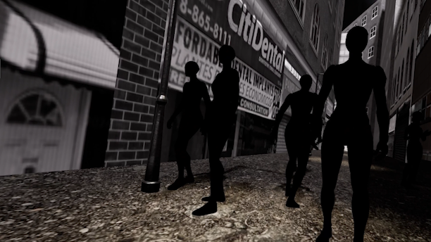
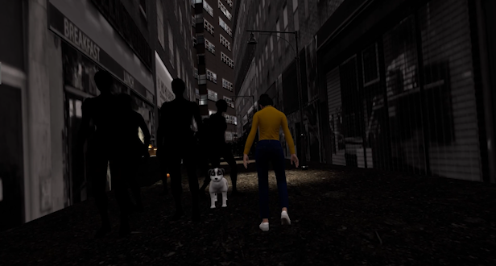
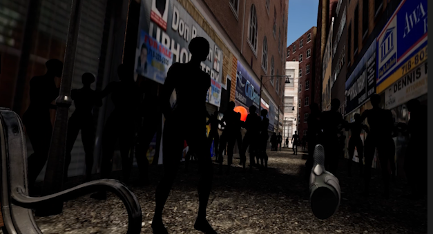

A short VR experience made in 8 weeks with 3 developers and 1 artist
Verloren Moeder is a short and emotional VR experience made in Unreal Engine 5. You play as a young, curious child sitting on a bench while your mother goes shopping. She tells you to stay put, but everything around you is so distracting, fruit falls, balloons float away, and your curiosity takes over. As you wander off, your mother’s voice becomes worried, until she finally finds you and gives you a comforting hug. The story explores curiosity, fear, and the warmth of being found again.
The experience uses simple, natural VR interactions. You can look around, reach for objects, and follow visual and sound cues that gently guide you through the story. There’s no traditional gameplay, instead, it focuses on emotional immersion and environmental storytelling. The changing tone of your mother’s voice reinforces the emotional journey from playful curiosity to concern and, finally, comfort.
This was my first project made in Unreal Engine 5, developed using Blueprints. Our team consisted of 3 developers and 1 artist. I focused on interaction logic, environment setup, and flow control. We worked closely to create a believable world with natural pacing and subtle emotional beats. Learning Unreal’s Blueprint system and balancing visual quality with smooth VR performance was a big part of my personal growth in this project.



Since this was my first Unreal Engine 5 project, learning to work efficiently with Blueprints was a major challenge. I also had to carefully optimize performance to maintain immersion in VR without sacrificing visual quality. One of the biggest challenges was fine-tuning the pacing and interaction timing, every action and sound needed to feel natural within the limited development time. Through this project, I learned how to balance emotion, simplicity, and technical precision in VR storytelling.